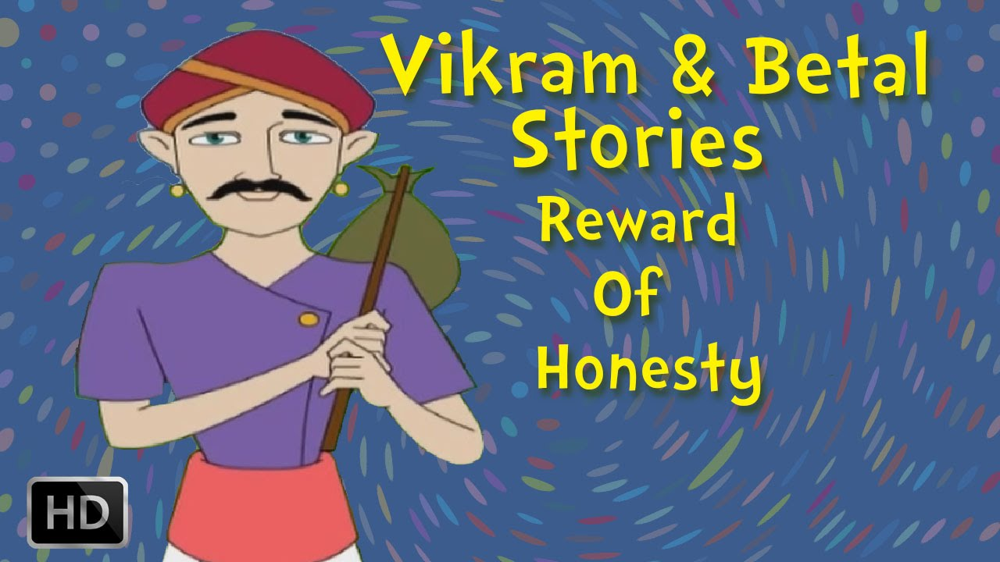
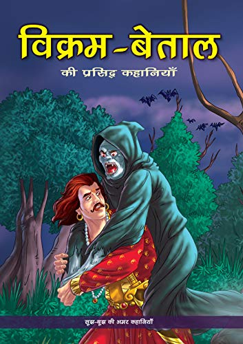

|  |

Many princes rose from their seats, and went and took a good look at the high wall as well as the cage of knives. One by one they went back to their seats. The wall looked too high for them; the cage was placed deep down below; and the space between the knives was very small. They would not be able to jump down without injuring themselves. None dared even to make an attempt. As they went back to their seats, some of them protested. "What kind of test is this? It could have been a sword- fight or wrestling or archery, or any other of that kind. But not this! It is almost trap from where one can't escape with one's life. Why should anyone sacrifice his life for the hand of a mad princess in the world?" It looked as though no suitor was willing to take the test. The king was in a dilemma. He regretted that his daughter did not accept his advice and desite from insisting ontests. Kurupshana was watching all this from his seat. suddenly a thought struck him. After all, people back home, like his stepmother, were only wishing for his death. If he were to succeed in the test by the grace of god, he stood to win the hand of none else than a princess! So, why should he not try his luck? And if he were to die, nobody would grieve over his fate. He left his seat and walked up to King Chandradeep . "Your Majesty, can I have your permission to take the test?" The king was shocked. Who was this ugly- looking handicapped youth? Suppose he were to succeed in the test? His daughter would have to marry him- according to the rules of the game. And if that happened, she would have to spend the rest of her life in the company of a handicapped husband! Princess Indumati, too, was in a similar dilemma. She was expecting to be married off to a prince, brave, daring and handsome. But look at this ugly youth! Would it be her fate to become his wife? She regretted she ever thought of tests for her suitors. Suddenly a doubt arose in her mind: would this young man be able to climb that high wall? How would he avoid a scratch while jumping into the cage when he had no hands to guide him through the sharp knives? She almost concluded that he would only meet with his end if he were to be foolish enough to attempt jumping down from the wall. King Chandradeep waited for a moment to know his daughter's reaction, and then gave the permission to Kurupshana. Kurupshana went up the wall and asked the soldiers to take him to the top of the wall. He then took a good look at the cage and jumped down. He landed between the knives arrayed all around on all the three tiers. He was unscrathed! A loud cheer arose from the audience. The cage was slowly raised, to allow the young man to come out. He then walked towards the king and the princess. Their face had gone a milky white. Kurupshana realised their predicament. "O King! Please don't worry. I didn't wish to marry the princess. I had only wanted to take a challenge and I know I've succeeded. That itself is a big reward of my life and I can now face life." He bowed low before the king and retreated. The vampire ended his narration there and turned to King Vikramaditya. " O King! Didn't Kurupshana behave like a foolish? If he had no intention of marrying the princess, why did he at all decide to undergo the test? And after having succeeded in the test and qualified to wed the princess, why did not want to marry her? What was the reward he was referring to when he said he didn't want to aspire for anything more? If you know the answer and still decide not to satisfy me, beware, your head will be blown to pieces! ""True, Kurupshana was a handicapped young man," said the king. " He was fully aware of his handicap that bothered his stepmother. He really wished that she changed her opinion about him. She should not any longer feel that he was no good. Instead she should know that where people with no handicap had failed, he could, despite his handicap, come out a victor. That, for him, was the biggest reward he could aspire for. He decided to undergo the hazardous test not with the hope of marrying a princess. If he married her, he would one day be called upon to rule the kingdom. But as a ruler, he wouldn't be able even to hold sword. If that was the case, it wouldn't be proper for him to marry her. That was why he gave up his claim to her hand. It was not any act of a foolish person. On the contrary, it was the decision of an intelligent, wise person." Betaal knew that king will definitely speak out the answer so he flew back to the ancient tree carrying the corpse along with him. Vikramaditya drew his sword and went after the Betaal.
| Previous | Index | Next |